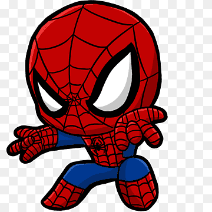

Gallery
Dancing
Dancing is my way of expressing myself and staying active. I enjoy learning new dance styles, whether it's contemporary, hip-hop, or ballroom. Dancing allows me to connect with music in a physical way and brings a sense of freedom and happiness that I cherish.
Watching Cartoons
Cartoons have been a beloved hobby of mine since childhood. They offer a unique blend of humor, creativity, and life lessons that resonate with all ages. From classic animations to modern shows, watching cartoons is my way of unwinding and enjoying a good laugh.
Listening to Music
Music has always been a big part of my life. I enjoy exploring different genres, from classical to contemporary, and find that music helps me relax and stay focused. Whether it's discovering new artists or revisiting old favorites, music is a constant source of joy and inspiration for me.